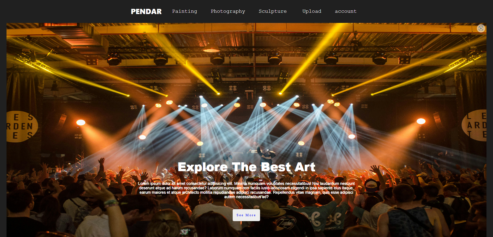
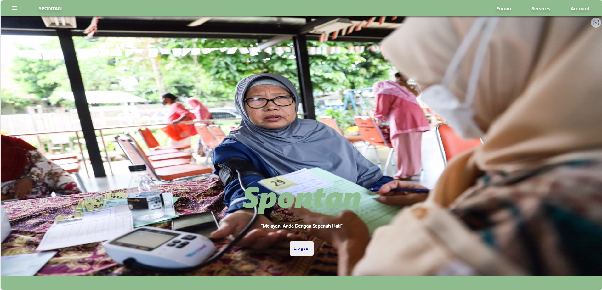
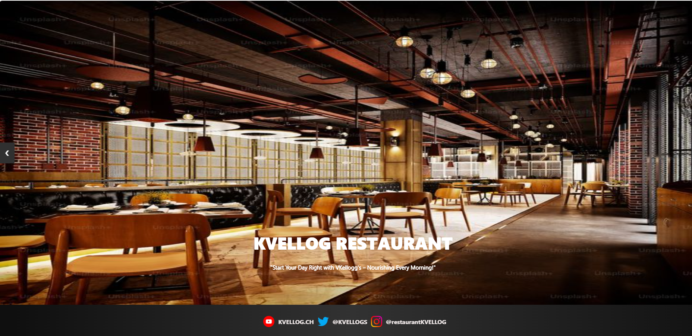

My Projects

Pendar
Di project ini saya membuat website yang dirancang untuk melakukan bidding terhadap berbagai karya seni, seperti lukisan, fotografi, dan patung. Saya bertugas sebagai bagian dari prototyping dan frontend.
View Project

Spontan
Di project ini saya membuat rancangan website untuk melakukan reservasi di Posyandu dan Puskesmas secara online, memudahkan proses penjadwalan layanan kesehatan. Pada proyek ini, saya bertugas dalam requirement gathering serta pembuatan prototipe untuk mengarahkan web.
View Project

kvellog
Di project ini saya membuat tampilan website yang berfungsi untuk menampilkan berbagai menu dan resep sarapan. Saya bertanggung jawab atas pembuatan prototipe dan pengembangan frontend memastikan tampilan visual yang menarik.
View Project